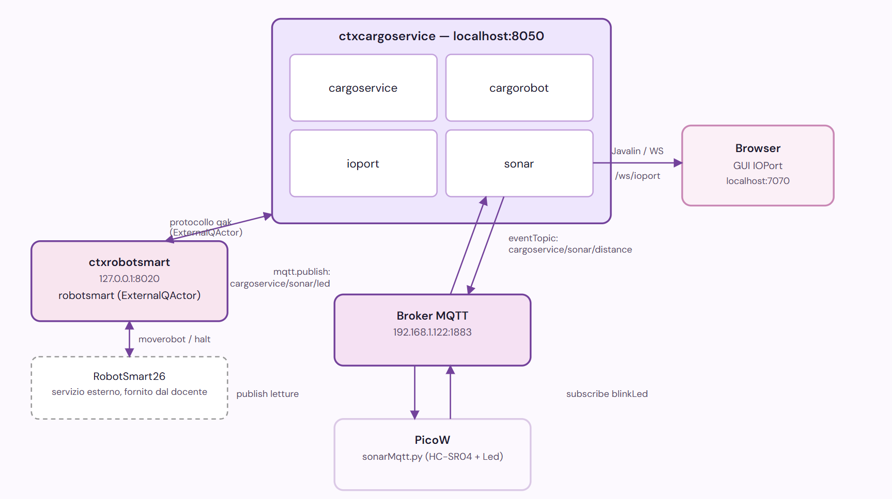

Implementare il sonar: scrivere il firmware del sensore su Raspberry PicoW che misura la distanza D davanti allo IOPort e collegarlo al resto del sistema. Gestire inoltre la reazione di cargorobot al guasto sonar durante un movimento già in corso, e completare la gestione del Led.
Come stabilito con il committente, il dispositivo fisico che misura la distanza D davanti allo IOPort è un Raspberry PicoW e occorre scriverne il firmware. Il PicoW, però, esegue MicroPython su un microcontrollore: non è in grado di eseguire la logica applicativa qak né di partecipare al modello ad attori del sistema. Per questo motivo il sistema include un componente intermedio dedicato, l'attore sonar, con lo scopo di ricevere i dati grezzi dal Pico e di tradurli in eventi comprensibili al resto del sistema.
L'unico compito del PicoW è andare a calcolare la distanza da un ostacolo e comunicarla sotto forma di stringa. Va però deciso come far comunicare questa informazione dal PicoW al sonar (e di conseguenza a cargoservice).Il PicoW instrada automaticamente stdin/stdout sulla porta USB (MicroPython), quindi il caso più semplice sarebbe un semplice print() della lettura. Tuttavia, essendo un PicoW dotato di connettività WiFi, può però anche pubblicare i dati su un broker MQTT. Andiamo quindi a confontare le due strategie possibili:
| Alternativa | Considerazioni |
|---|---|
| Seriale via USB/UART | Nessun componente architetturale aggiuntivo, latenza minima. Il limite è fisico: il nodo che ospita l'attore sonar deve girare sulla stessa macchina a cui il PicoW è collegato via cavo. |
| MQTT via WiFi | il PicoW pubblica le letture su un topic di un broker MQTT, senza vincoli di collegamento fisico col nodo che ospita sonar. Introduce però un componente architetturale aggiuntivo (il broker). |
Si decide di adottare MQTT: l'attore sonar può vivere in un nodo fisicamente separato dal PicoW senza alcun impatto sul firmware. Il PicoW pubblica le letture di distanza su un topic dedicato, già formattate come messaggio qak, così che l'infrastruttura qak lo riconosca senza bisogno di codice di conversione lato JVM. L'attore sonar si sottoscrive allo stesso topic. Utilizziamo inoltre lo stesso canale, in verso opposto, per portare il comando blinkLed dal sistema al PicoW, su un topic separato.
Decisa la scelta di MQTT come canale, resta da decidere come i payload che arrivano sul broker diventino messaggi per l'attore sonar. Una prima ipotesi da analizzare è quella di riusare lo stesso schema già adottato per ioport: una classe Java dedicata (sul modello di IOPortWsAdapter) che apre la connessione MQTT, si sottoscrive al topic e, alla ricezione di un payload, lo inietta come messaggio nell'attore tramite un metodo interno del runtime qak. Questa soluzione, però, richiedeva di verificare un meccanismo di iniezione che comportava ulteriore complicazione non necessaria allo scopo del sistema.
Inoltre qak offre un supporto nativo per MQTT: un System può dichiarare infatti direttamente un broker (mqttBroker "host":porta eventTopic "topic") e qualunque attore con una transizione whenEvent <nome> il cui payload combaci col formato pubblicato su quel topic riceve automaticamente l'evento, senza alcun codice di sottoscrizione lato Java. Il runtime qak stesso è quindi l'endpoint MQTT.
Si sceglie questa seconda strada: si dichiara il broker una sola volta a livello di System.
Il supporto nativo copre però solo la direzione in ingresso (PicoW → sonar): non esiste un analogo dispatchTopic per la pubblicazione automatica in uscita. Per il comando blinkLed (sonar → PicoW) resta quindi necessaria una chiamata esplicita, che il codice risolve con l'oggetto mqtt reso disponibile dal runtime non appena un broker è dichiarato.
Come specificato nei requisiti, le due soglie di cui il sistema tiene traccia sono:
D < DFREE/2 per almeno 3 secondi → viene rilevato un containerD > DFREE per almeno 3 secondi → probabile malfunzionamento del sonarIl PicoW emette solo letture continue di distanza: è sonar a dover mantenere lo stato temporale delle soglie ed emettere i dispatch verso cargoservice/cargorobot/ioport solo quando queste vengono realmente superate per l'intera finestra di conferma.
Resta da stabilire a quale cadenza il PicoW debba pubblicare le letture. Valutiamo se pubblicare a 1 lettura/secondo oppure aumentare la frequenza (ad esempio a 5 Hz) per una risoluzione più fine sul momento esatto di superamento soglia: una cadenza più alta ridurrebbe di poco l'incertezza sul preciso istante di superamento, ma aumenta il traffico MQTT e introduce un parametro di tuning non richiesto dai requisiti. Con la finestra di conferma di 3 secondi imposta da requisiti, anche a 1 lettura/secondo si hanno comunque circa 3 campioni entro la finestra: sufficienti a confermare in modo affidabile un cambio di stato.
Si decide quindi di implementare la cadenza di 1 secondo.
sonar comunica con un dispositivo esterno e fisicamente separato: il PicoW, su una propria rete WiFi. Ci si può chiedere se questa separazione fisica debba riflettersi anche a livello di qak, cioè se sonar debba vivere in un proprio Context dedicato invece di condividere ctxcargoservice con cargoservice, cargorobot e ioport.
| Soluzione | Descrizione |
|---|---|
Context dedicato (ctxsonar) | sonar vive in un proprio processo qak, e comunica con cargoservice/cargorobot tramite un ExternalQActor. |
| Context condiviso | sonar resta in ctxcargoservice, come già ioport. |
Introdurre un ctxsonar dedicato non aggiungerebbe alcuna separazione reale rispetto a quella già garantita dal broker MQTT: sposterebbe solo l'attore sonar in un secondo processo qak, aggiungendo un ExternalQActor e un salto di rete interno fra sonar e cargoservice/cargorobot, un costo senza un confine fisico reale da giustificarlo.
sonar resta quindi in ctxcargoservice. Nessuno dei quattro attori applicativi (cargoservice, cargorobot, ioport, sonar) giustifica un Context separato, perché nessuno di essi comunica con un altro vero processo qak se non tramite robotsmart (unico caso di ExternalQActor), in quanto fornito e gestito dal committente come servizio indipendente.
Come deciso col committente, un guasto sonar rilevato mentre cargorobot è già in movimento deve fermare immediatamente il robot, lasciare il container nella posizione corrente e riprendere l'operazione dal punto di interruzione al ripristino (D ≤ DFREE). cargorobot deve quindi restare sensibile a guasti in ognuna delle quattro tratte del trasporto (verso IOPort, verso slot5, verso lo slot riservato, verso HOME), non solo in una di esse.
blinkLed raggiunge il PicoW via MQTT, che deve farlo lampeggiare fisicamente mentre allo stesso tempo continua a leggere il sonar e pubblicare. Il firmware MicroPython gira però su un solo thread: si considera quindi come ipotesi un semplice flag booleano, aggiornato dal callback MQTT sul topic del Led, controllato una volta per iterazione nel loop principale già esistente.
Questo sprint aggiunge o rende operative le seguenti:
Dispatch sonarcontainer : sonarcontainer(DISTANCE) // container rilevato (D < DFREE/2 per >= 3s); Event sonarreading : sonarreading(DISTANCE) // lettura di distanza Dispatch sonarfault : sonarfault(CAUSE) // D > DFREE per >= 3s: sospetto guasto sonar Dispatch sonarrestored : sonarrestored(NONE) // sonar tornato a D <= DFREE dopo un guasto Dispatch blinkLed : blinkLed(FLAG) // ordinare al PicoW di accendere il Led (via MQTT) Dispatch halt : halt(X) // arresto immediato
I test si aggiungono a quelli già coperti negli sprint precedenti, qui non ripetuti. Sono organizzati in due livelli: TP-A sull'attore sonar isolato (con letture MQTT simulate via mosquitto_pub, senza il PicoW fisico) e TP-B end-to-end col PicoW reale.
| ID | Scenario | Esito atteso |
|---|---|---|
| TP-A1 | Pubblico su cargoservice/sonar/distance una sequenza di letture con D<DFREE/2 per soli 2 secondi, poi torno sopra soglia | Nessun setOccupied(true)/sonarcontainer inviato (falso positivo evitato: sotto i 3 s richiesti) |
| TP-A2 | Come sopra ma per 3.5 secondi continui | sonar invia setOccupied(true) a ioport e sonarcontainer a cargoservice una sola volta, al superamento dei 3 s; se cargoservice era in engaged, avvia il trasporto |
| TP-A3 | Dopo TP-A2, pubblico una lettura con D≥DFREE/2 | sonar invia subito setOccupied(false) a ioport (nessuna finestra di conferma richiesta in uscita) |
| TP-A4 | Pubblico letture con D>DFREE per 3.5 secondi continui | sonar invia sonarfault sia a cargoservice sia a cargorobot; cargoservice mostra "Out of service" indipendentemente dallo stato in cui si trova |
| TP-A5 | Dopo TP-A4, pubblico una lettura con D≤DFREE | sonar invia sonarrestored a entrambi; il display torna allo stato precedente ("Service working") |
| TP-A6 | Da cargoservice, faccio scattare blinkLed(true) (ingresso in engaged) | sonar pubblica su cargoservice/sonar/led un payload nel formato messaggio qak (via mqtt.publish + CommUtils.buildDispatch), verificabile con mosquitto_sub in assenza del PicoW |
| ID | Scenario | Esito atteso |
|---|---|---|
| TP-B1 | Flusso completo: pulsante IOPort → container fisico posizionato davanti al sonar per >3 s → trasporto | ioport segna occupato, cargoservice accetta il carico, il Led lampeggia per tutta la fase engaged e si spegne a trasporto concluso |
| TP-B2 | Copro/scopro il sonar con la mano oltre DFREE per >3 s durante un moverobot di cargorobot in corso | cargorobot ferma RobotSmart26 (halt), sospende il movimento e, al ripristino, riprende la stessa tratta (stesso Leg) fino a destinazione |
Il broker MQTT si dichiara una sola volta a livello di System, indicando l'unico topic per cui si vuole ricezione automatica come Event (le letture di distanza). Il topic del Led, essendo in uscita, non compare qui: viene gestito esplicitamente nel corpo dell'attore (vedi sotto). sonar si aggiunge a ctxcargoservice.
System sprint3 mqttBroker "192.168.1.122" : 1883 eventTopic "cargoservice/sonar/distance" Context ctxcargoservice ip [host="localhost" port=8050] // per cargoservice, cargorobot, ioport e sonar Context ctxrobotsmart ip [host="127.0.0.1" port=8020] ExternalQActor robotsmart context ctxrobotsmart
Nuovo QActor nel contesto ctxcargoservice. Mantiene lo stato temporale delle due soglie (finestra di conferma di 3 s) confrontando timestamp di sistema direttamente nei blocchi a ogni sonarreading in arrivo.
QActor sonar context ctxcargoservice {
[# var DFREE = 30
var Dist = 0.0
var Occupied = false
var Faulted = false
var T0Container = 0L // 0 = nessuna finestra di conferma container in corso
var T0Fault = 0L // 0 = nessuna finestra di conferma guasto in corso
var WINDOW = 3000L // 3 secondi
#]
State idle initial {
println("$name | idle, in ascolto delle letture del PicoW via MQTT...") color blue
}
Transition t0
whenEvent sonarreading -> onReading
whenMsg blinkLed -> onBlink
State onReading {
onMsg(sonarreading : sonarreading(D)) {
[# Dist = payloadArg(0).toDouble()
var Now = System.currentTimeMillis()
#]
if [# Dist < DFREE/2.0 #] {
[# if (T0Container == 0L) { T0Container = Now } #]
if [# !Occupied && (Now - T0Container) >= WINDOW #] {
[# Occupied = true #]
println("$name | container rilevato (D=$Dist cm), notifico ioport e cargoservice") color blue
forward ioport -m setOccupied : setOccupied(true)
forward cargoservice -m sonarcontainer : sonarcontainer($Dist)
}
} else {
[# T0Container = 0L #]
if [# Occupied && Dist >= DFREE/2.0 #] {
[# Occupied = false #]
println("$name | container non piu' rilevato (D=$Dist cm)") color blue
forward ioport -m setOccupied : setOccupied(false)
}
}
if [# Dist > DFREE #] {
[# if (T0Fault == 0L) { T0Fault = Now } #]
if [# !Faulted && (Now - T0Fault) >= WINDOW #] {
[# Faulted = true #]
println("$name | guasto sonar sospetto (D=$Dist cm)") color red
forward cargoservice -m sonarfault : sonarfault(sonarOutOfRange)
forward cargorobot -m sonarfault : sonarfault(sonarOutOfRange)
}
} else {
[# T0Fault = 0L #]
if [# Faulted #] {
[# Faulted = false #]
println("$name | sonar ripristinato (D=$Dist cm)") color blue
forward cargoservice -m sonarrestored : sonarrestored(NONE)
forward cargorobot -m sonarrestored : sonarrestored(NONE)
}
}
}
}
Goto idle
State onBlink {
onMsg(blinkLed : blinkLed(FLAG)) {
[# var F = payloadArg(0) #]
[# var LedMsg = CommUtils.buildDispatch(name, "blinkLed", "blinkLed(" + F + ")", "picow")
mqtt.publish("cargoservice/sonar/led", LedMsg.toString()) #]
println("$name | comando Led($F) inoltrato al PicoW via MQTT") color blue
}
}
Goto idle
}Rispetto a Sprint2, engaged non avvia più transportContainer subito: resta in attesa di sonarcontainer e solo al suo arrivo passa a un nuovo stato startTransport che incarica cargorobot. Ogni stato può portare verso uno stato di "OutOfService" o "ServiceRestored", che aggiorna il display e torna indietro:
Transition t0
whenRequest loadrequest -> handleRequest
whenMsg sonarfault -> idleOutOfService
whenMsg sonarrestored -> idleServiceRestored
State idleOutOfService {
onMsg(sonarfault : sonarfault(CAUSE)) {
[# var H = "'" + hold.displayStatus() + "'" #]
[# var S = "'OUT_OF_SERVICE'" #]
[# var M = "'Out of service'" #]
forward ioport -m updateDisplay : updateDisplay($S,$H,$M)
}
}
Goto idle
// idleServiceRestored e' l'analogo speculare (S='IDLE', M='Service working')
State engaged {
println("$name | engaged, in attesa che il cliente porti il container (slot $Slot)") color magenta
forward sonar -m blinkLed : blinkLed(true)
}
Transition t0
whenTime 30000 -> disengagedTimeout
whenMsg sonarcontainer -> startTransport
whenRequest loadrequest -> rejectBusyContainer
whenMsg sonarfault -> engagedOutOfService
whenMsg sonarrestored -> engagedServiceRestored
State startTransport {
println("$name | container rilevato, incarico cargorobot per slot $Slot (x=$TX,y=$TY)") color magenta
request cargorobot -m transportContainer : transportContainer($Slot,$TX,$TY)
}
Goto waitingTransport
State waitingTransport { }
Transition t1
whenReply transportDone -> success
whenReply transportFailed -> disengagedFault
whenRequest loadrequest -> rejectBusyTransport
whenRequest waitMarker -> handleMarking
whenMsg sonarfault -> transportOutOfService
whenMsg sonarrestored -> transportServiceRestored
// disengagedTimeout, disengagedFault e success (dopo transportDone)
// inviano ora anche forward sonar -m blinkLed : blinkLed(false)
// oltre all'aggiornamento display gia' presente da Sprint2Ogni tratta del trasporto (verso IOPort, verso slot5, verso lo slot riservato, verso HOME) resta sensibile a sonarfault mentre attende la reply di moverobot. Alla ricezione, cargorobot ferma RobotSmart26 con halt e attende sonarrestored per riprendere la stessa tratta, usando Leg per sapere dove rientrare nel flusso normale:
[# var TargetSlot = -1
var TargetX = -1
var TargetY = -1
var PendingTX = -1 // target del moverobot in corso (per la ripresa dopo un guasto sonar)
var PendingTY = -1
var Leg = "" // "toIOPort" | "toSlot5" | "toReserved" | "toHome"
#]
// ad ogni tratta, prima della request moverobot:
// PendingTX/PendingTY = destinazione della tratta corrente ; Leg = nome della tratta
// e la relativa Transition aggiunge, accanto a moverobotdone/moverobotfailed:
whenMsg sonarfault -> onSonarFault
State onSonarFault {
onMsg(sonarfault : sonarfault(CAUSE)) {
println("$name | sonarfault ricevuto, fermo RobotSmart26") color red
forward robotsmart -m halt : halt(NONE)
}
}
Transition tf whenMsg sonarrestored -> resumeMove
State resumeMove {
onMsg(sonarrestored : sonarrestored(NONE)) {
println("$name | sonarrestored ricevuto, riprendo (leg=$Leg) verso ($PendingTX,$PendingTY)") color yellow
request robotsmart -m moverobot : moverobot($PendingTX, $PendingTY, 345)
}
}
Transition tr
whenReply moverobotdone -> resumedOk
whenReply moverobotfailed -> halted
State resumedOk { }
Goto atIOPort if [# Leg == "toIOPort" #] else checkResumedSlot5
State checkResumedSlot5 { }
Goto atSlot5 if [# Leg == "toSlot5" #] else checkResumedSlot
State checkResumedSlot { }
Goto atSlot if [# Leg == "toReserved" #] else doneImplementa la cadenza di lettura di 1 secondo.
TOPIC_DISTANCE = b"cargoservice/sonar/distance"
TOPIC_LED = b"cargoservice/sonar/led"
blink_led = False
def on_message(topic, msg):
global blink_led
payload = msg.decode()
if "blinkLed(true)" in payload:
blink_led = True
elif "blinkLed(false)" in payload:
blink_led = False
led.off()
# ===== MAIN =====
connect_wifi()
client = connect_mqtt()
client.set_callback(on_message)
client.subscribe(TOPIC_LED)
while True:
try:
client.check_msg()
if blink_led:
led.toggle()
time.sleep(0.3)
d = misura_distanza()
if d is not None:
msg = "msg(sonarreading,event,picow,none,sonarreading(" + "(%d)" % round(d) + "),0)"
client.publish(TOPIC_DISTANCE, msg.encode())
time.sleep(1)
except Exception as e:
print("È successo qualcosa di imprevisto:", type(e).__name__, e)Oltre al firmware, è necessario caricare sul PicoW altri due file: il file "umqtt_simple", che permette di utilizzare MQTT su MicroPython, e il file "secrets", che contiene la configurazione di rete (SSID/password).
Il sistema resta distribuito su due Context qak, sonar si aggiunge a ctxcargoservice senza richiedere un nodo o una porta propri. Il PicoW non è un Context qak: si collega al sistema esclusivamente tramite il broker MQTT, dichiarato una sola volta a livello di System.
| Nodo | Host / Porta | Contenuto |
|---|---|---|
ctxcargoservice | localhost:8050 | cargoservice, cargorobot, ioport, sonar |
ctxrobotsmart | 127.0.0.1:8020 | robotsmart (ExternalQActor fornito dal committente) |
| Server Javalin (GUI IOPort) | localhost:7070 | istanziato dall'attore ioport (IOPortWsAdapter): redirect a /ioport_gui.html, endpoint WebSocket su /ws/ioport; pannello raggiungibile su http://localhost:7070/ioport_gui.html |
| Broker MQTT | x.x.x.x:1883 (IP da adattare alla rete usata) | ponte fra il PicoW e ctxcargoservice. |
| PicoW | rete WiFi del banco, client MQTT id sonarpico | firmware sonarMqtt.py. |
